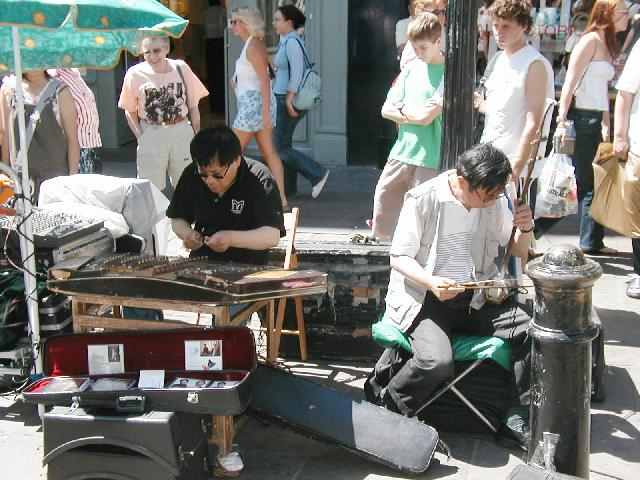
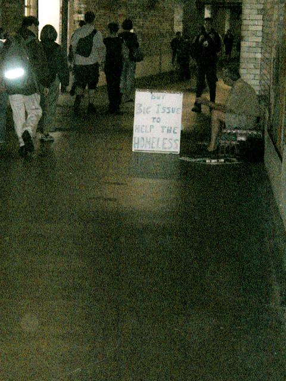

Deception and
Beggary

Electric Erhu in Covent Gardens
The instrument on the left is an erhu; you may remember the
sound from Crouching Tiger. A Chinese friend tells me that the
instrument on the right decended from the Appalachian hammered dulcimer
through missionaries. I bought their CD; it was movie tunes alas,
rather than the (much more interesting) Chinese classics they were
performing.
Encountered a classic hustle in
Knightsbridge. An Indian lady in a very expensive sari stopped me
to say she'd just been robbed, could I give her several pounds. I
recognized this from encountering its U.S. equivalent in both DC and
LA, and referred her to the bobbies. Her expression of distress
looked half fraud and half guilt. Practice, practice. (Well, in
both senses of the word. If anyone but me remembers the 18th
century sense.)

Buy homeless bonds!
I doubt there's much of a market for the bonds he's
issuing. But a slumlord former client once said "There's money in
poverty", so perhaps I shouldn't be so sure.